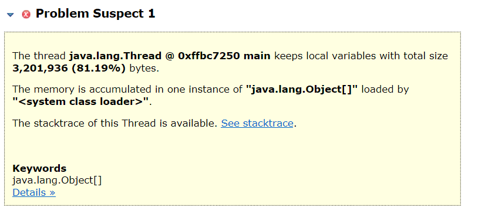
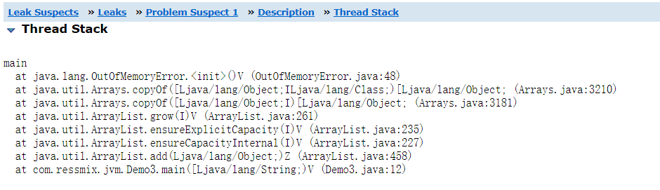

本章，我们将通过示例代码演示Java堆内存区域是如何发生内存溢出的，并根据内存快照进行分析。
我们回顾下堆内存溢出的一个场景：系统负载很高，不停的在Eden区创建新对象，直到触发Young GC，但是由于并发太高，Young GC发现Eden区存活对象非常多，Survivor无法容纳，只能把大批存活对象转移到老年代。经过几次这种Young GC之后，老年代也满了，于是触发Full GC，但是Full GC之后老年代里还是塞满了对象，导致Young GC过后的存活对象无处可安放，最终引发堆内存溢出。
package com.ressmix.jvm;
import java.util.ArrayList;
import java.util.List;
public class Demo3 {
public static void main(String[] args) {
long counter = 0L;
List<Object> list = new ArrayList<Object>();
while (true) {
list.add(new Object());
System.out.println("当前创建了第" + ++counter + "个对象");
}
}
上述代码很简单，就是不停的创建对象，由于对象由一个while循环外部的List引用着，且main()方法是无限执行的，所以这些创建的对象始终不会被回收掉。这样最终Eden区、老年代的空间都会被占满。
我们设置下堆内存的总大小为5MB：-Xms5m -Xmx5m -XX:+UseParNewGC -XX:+UseConcMarkSweepGC -XX:+PrintGCDetails -Xloggc:gc.log -XX:+HeapDumpOnOutOfMemoryError -XX:HeapDumpPath=./，这样就可以快速触发堆内存溢出。程序执行后的打印日志输出如下：
当前创建了第160063个对象
当前创建了第160064个对象
当前创建了第160065个对象
java.lang.OutOfMemoryError: Java heap space
Dumping heap to ./\java_pid6412.hprof ...
Heap dump file created [7250823 bytes in 0.058 secs]
Exception in thread "main" java.lang.OutOfMemoryError: Java heap space
at java.util.Arrays.copyOf(Arrays.java:3210)
at java.util.Arrays.copyOf(Arrays.java:3181)
at java.util.ArrayList.grow(ArrayList.java:261)
at java.util.ArrayList.ensureExplicitCapacity(ArrayList.java:235)
at java.util.ArrayList.ensureCapacityInternal(ArrayList.java:227)
at java.util.ArrayList.add(ArrayList.java:458)
at com.ressmix.jvm.Demo3.main(Demo3.java:12)
可以看到，在5MB的堆内存中，不断创建Obejct对象，当创建到第160065个对象时，堆内存实在放不下了，从而引发java.lang.OutOfMemoryError。
我们通过程序日志中的报错“java.lang.OutOfMemoryError: Java heap space”，知道发生了Java堆内存溢出。针对Java堆内存溢出，一般不用看GC日志，因为堆内存溢出伴随的GC日志内容会非常多，我们直接分析dump出的内存快照即可。
采用MAT打开内存快照java_pid6412.hprof（进程名不同，文件名也略有区别）：

可以看到一大堆对象占据了81.19%的堆内存，我们直接点击"See stacktrace"，看看这些对象是在程序哪里创建出来的：

很显然，main方法的第12行，一直调用list.add(new Object())，由此直接引发了内存溢出，我们只要有针对性的修复我们代码的bug即可。
本章，我们通过代码示例模拟了堆内存溢出的场景，Java堆内存也是最容易出现内存溢出的区域。基本的分析思路就是dump出事发现场的内存快照，然后通过MAT进行查看，分析出内存占用最多的对象，然后分析线程调用栈，找到代码位置，最后进行优化即可。
从下一章开始，我们将给出真实的生产环境案例，看看这些案例是如何引起OOM以及排查和解决的思路方法。